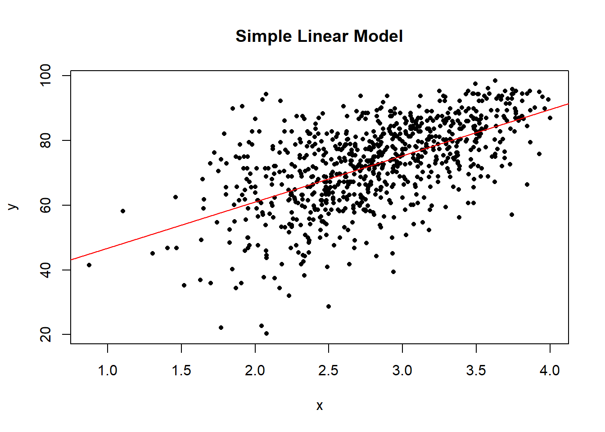
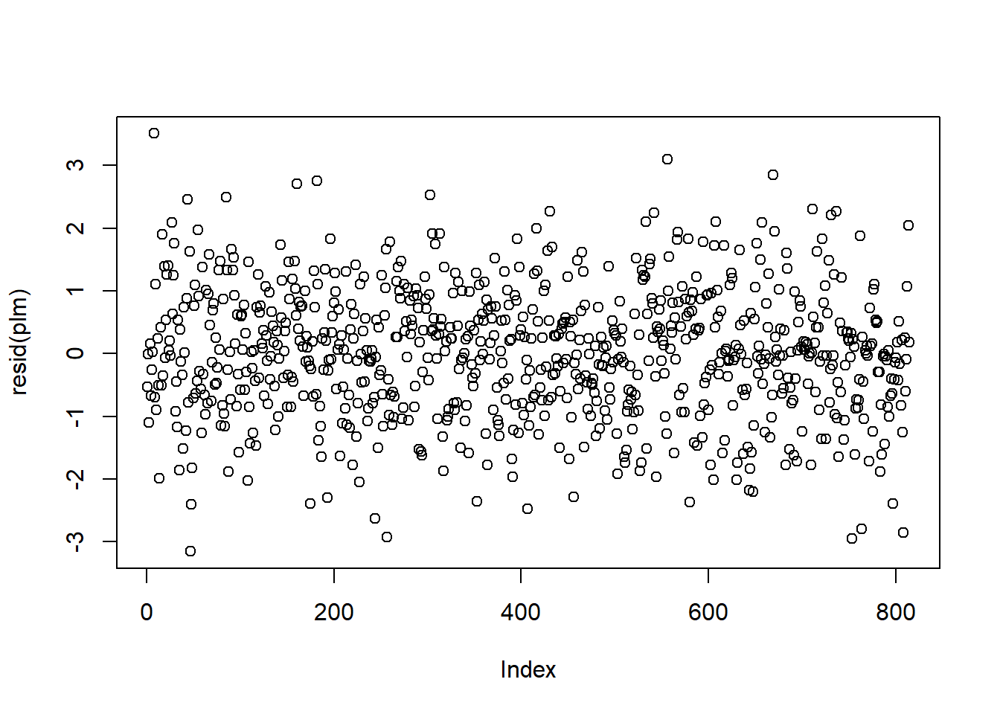
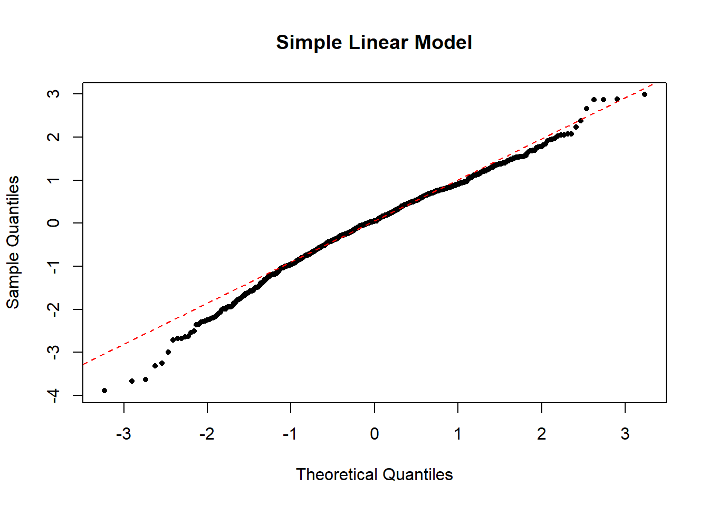
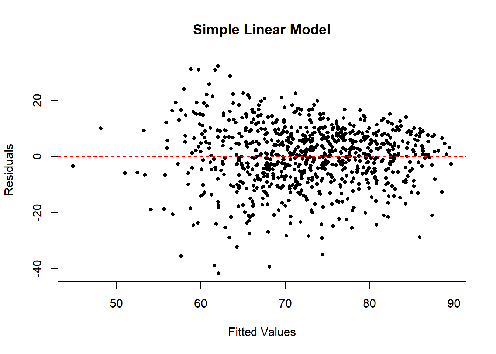
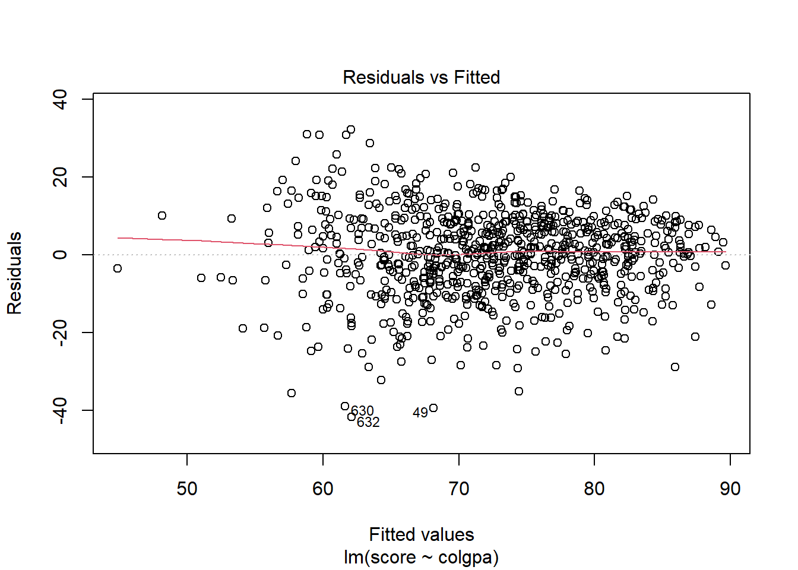
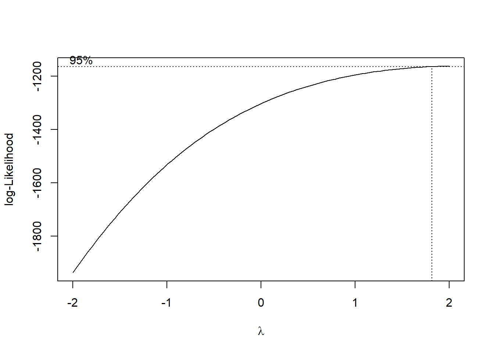
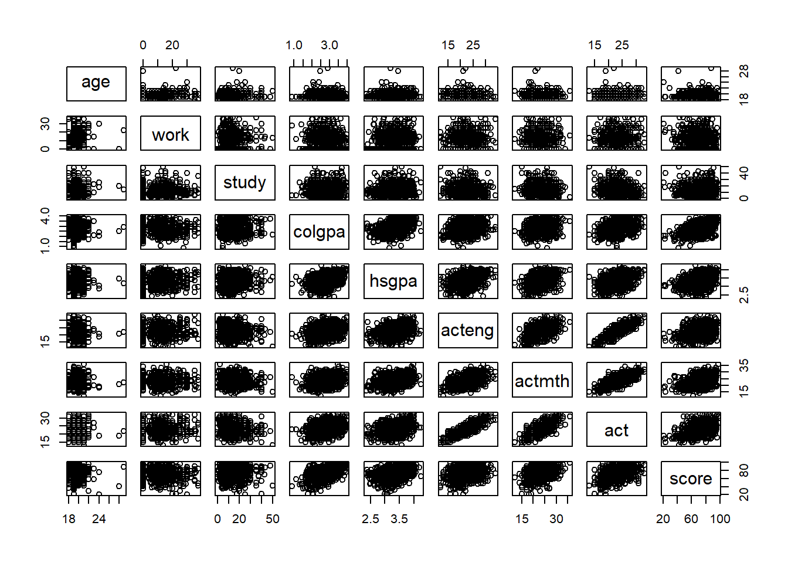
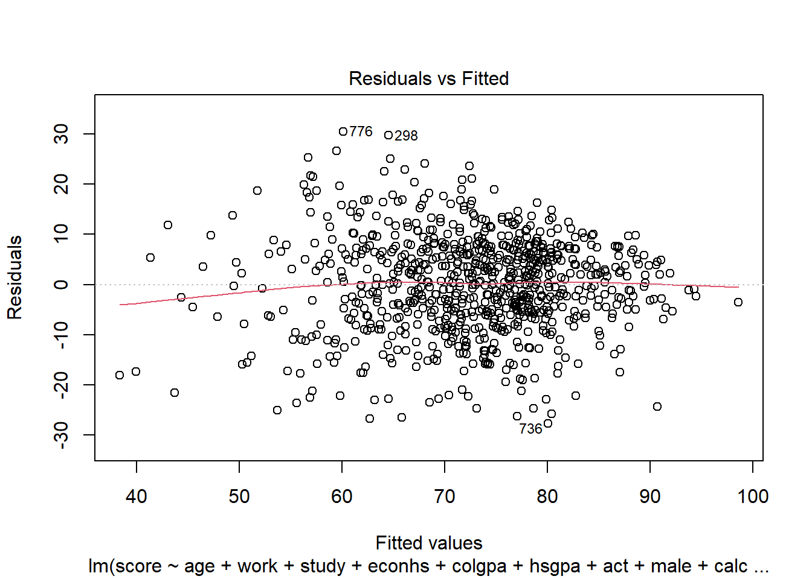

3 Introduction to Linear Regression
Author: Ferris Zhu, Joslin Goh, Trang Bui, Glen McGee
Last Updated: Feb 09, 2021
3.1 Introduction
The goal of this chapter is to introduce linear regression, an important model which is widely used in data analysis. The reasons for its popularity are
- the model assumptions are often found satisfactory among many data sets; and
- the interpretation of each parameter in the model is easy and clear.
When the assumptions of the linear regression model are satisfied, the model is powerful in terms of inference and interpretation.
3.1.1 List of R packages Used
In this chapter, we will be using the packages wooldridge, corrplot, lmtest, and MASS.
3.1.2 Motivating Example
Throughout this chapter, we will be considering the data set econmath from the R package wooldridge.
We can first load the data set econmath to the working environment.
This data set contains information about students taking an economics class in college. The details can be found in the reference manual of the package.
A data set is usually represented by a table of rows and columns. The rows represent individual observations and the column represents features or factors of the individual observations. The function head() provides the preview of the data set by printing out the first six rows of the data set. To see the whole data set, use the function View().
## age work study econhs colgpa hsgpa acteng actmth act mathscr male calculus
## 1 23 15 10.0 0 3.4909 3.355 24 26 27 10 1 1
## 2 23 0 22.5 1 2.1000 3.219 23 20 24 9 1 0
## 3 21 25 12.0 0 3.0851 3.306 21 24 21 8 1 1
## 4 22 30 40.0 0 2.6805 3.977 31 28 31 10 0 1
## 5 22 25 15.0 1 3.7454 3.890 28 31 32 8 1 1
## 6 22 0 30.0 0 3.0555 3.500 25 30 28 10 1 1
## attexc attgood fathcoll mothcoll score
## 1 0 0 1 1 84.43
## 2 0 0 0 1 57.38
## 3 1 0 0 1 66.39
## 4 0 1 1 1 81.15
## 5 0 1 0 1 95.90
## 6 1 0 0 1 83.61In the data set econmath, the rows are students and the columns are features of these students, for example, age, work hours, study hours, high school GPA, etc. These features are called variables.
The function summary() gives a brief summary of the data, including the minimum value, maximum value, the mean and median of each variable in the data set.
## age work study econhs
## Min. :18.00 Min. : 0.000 Min. : 0.00 Min. :0.0000
## 1st Qu.:19.00 1st Qu.: 0.000 1st Qu.: 8.50 1st Qu.:0.0000
## Median :19.00 Median : 8.000 Median :12.00 Median :0.0000
## Mean :19.41 Mean : 8.626 Mean :13.92 Mean :0.3703
## 3rd Qu.:20.00 3rd Qu.:15.000 3rd Qu.:18.00 3rd Qu.:1.0000
## Max. :29.00 Max. :37.500 Max. :50.00 Max. :1.0000
##
## colgpa hsgpa acteng actmth
## Min. :0.875 Min. :2.355 Min. :12.00 Min. :12.00
## 1st Qu.:2.446 1st Qu.:3.110 1st Qu.:20.00 1st Qu.:20.00
## Median :2.813 Median :3.321 Median :23.00 Median :23.00
## Mean :2.815 Mean :3.342 Mean :22.59 Mean :23.21
## 3rd Qu.:3.207 3rd Qu.:3.589 3rd Qu.:25.00 3rd Qu.:26.00
## Max. :4.000 Max. :4.260 Max. :34.00 Max. :36.00
## NA's :42 NA's :42
## act mathscr male calculus
## Min. :13.00 Min. : 0.000 Min. :0.0 Min. :0.0000
## 1st Qu.:21.00 1st Qu.: 7.000 1st Qu.:0.0 1st Qu.:0.0000
## Median :23.00 Median : 8.000 Median :0.5 Median :1.0000
## Mean :23.12 Mean : 7.875 Mean :0.5 Mean :0.6764
## 3rd Qu.:25.00 3rd Qu.: 9.000 3rd Qu.:1.0 3rd Qu.:1.0000
## Max. :33.00 Max. :10.000 Max. :1.0 Max. :1.0000
## NA's :42
## attexc attgood fathcoll mothcoll
## Min. :0.0000 Min. :0.0000 Min. :0.0000 Min. :0.0000
## 1st Qu.:0.0000 1st Qu.:0.0000 1st Qu.:0.0000 1st Qu.:0.0000
## Median :0.0000 Median :1.0000 Median :1.0000 Median :1.0000
## Mean :0.2967 Mean :0.5864 Mean :0.5245 Mean :0.6285
## 3rd Qu.:1.0000 3rd Qu.:1.0000 3rd Qu.:1.0000 3rd Qu.:1.0000
## Max. :1.0000 Max. :1.0000 Max. :1.0000 Max. :1.0000
##
## score
## Min. :19.53
## 1st Qu.:64.06
## Median :74.22
## Mean :72.60
## 3rd Qu.:82.79
## Max. :98.44
## Based on the information from this data set, we want to answer the question: What factors are significantly associated with a students score in a college economics course?. To do this, we will try to find how the variable score, i.e., the final score in an economics course measured as a percentage, can be explained by other variables. Linear regression is a helpful statistical model to answer this question.
The data set contains some missing data. In this chapter, we will only analyze the observations that are complete. Therefore, we will discard the data points with missing fields and gather them in a new data set econ.
3.1.3 Variables
Dependent/Response/Outcome/Explained/Predicted Variable: This is the variable that we want to study, usually denoted as \(y\) in linear regression models. In our case, the dependent variable is
score. Linear regression is typically used to model continuous outcomes.Independent/Control/Explanatory/Covariate/Predictor Variables: They are factors which may influence the dependent variable, denoted as \(X\) in linear models. These variables can be of different data types, continuous or categorical.
Continuous data type takes any value over a continuous range. We can have measurement units for it. In R, continuous data is usually defined as
numorint. In the data setecon, there are variables that should be treated as continuous. These areage(years),work(hours worked per week),study(hours studying per week),colgpa(college GPA at the beginning of the semester),hsgpa(high school GPA),acteng(ACT English score),actmth(ACT math score), andact(ACT composite score).Categorical data type only takes values over a finite set of values (levels), while continuous data type has infinite possible values over a continuous range. In the data set
econ, there are variables that should be treated as categorical, such asmale(gender of the student, only takes in 2 values, 0 for female and 1 for male),mathscr(math quiz score, only takes in 11 values from 0 to 1). However, R is treating all these variables as continuous. In fact, we can see how R defines each variable in the data set using the functionstr().## 'data.frame': 814 obs. of 17 variables: ## $ age : int 23 23 21 22 22 22 22 22 22 21 ... ## $ work : num 15 0 25 30 25 0 20 20 28 22.5 ... ## $ study : num 10 22.5 12 40 15 30 25 15 7 25 ... ## $ econhs : int 0 1 0 0 1 0 1 0 0 0 ... ## $ colgpa : num 3.49 2.1 3.09 2.68 3.75 ... ## $ hsgpa : num 3.35 3.22 3.31 3.98 3.89 ... ## $ acteng : int 24 23 21 31 28 25 15 28 28 18 ... ## $ actmth : int 26 20 24 28 31 30 19 30 28 19 ... ## $ act : int 27 24 21 31 32 28 18 32 30 17 ... ## $ mathscr : int 10 9 8 10 8 10 9 9 6 9 ... ## $ male : int 1 1 1 0 1 1 0 1 0 0 ... ## $ calculus: int 1 0 1 1 1 1 1 1 0 1 ... ## $ attexc : int 0 0 1 0 0 1 0 1 1 0 ... ## $ attgood : int 0 0 0 1 1 0 1 0 0 1 ... ## $ fathcoll: int 1 0 0 1 0 0 0 1 0 0 ... ## $ mothcoll: int 1 1 1 1 1 1 0 1 1 0 ... ## $ score : num 84.4 57.4 66.4 81.2 95.9 ...To convert a variable into the categorical data type in R, we use function
factor().Binary variables are categorical variables that take in only 2 values, 1 or 0. In the data set
econ, we havemale(=1 if male),econhs(=1 if taken economics),calculus(=1 if taken calculus),fathcoll(=1 if father has BA), andmothcoll(=1 if mother has BA).
econ$male <- factor(econ$male)
econ$econhs <- factor(econ$econhs)
econ$calculus <- factor(econ$calculus)
econ$fathcoll <- factor(econ$fathcoll)
econ$mothcoll <- factor(econ$mothcoll)- Categorical variables with more than 2 levels: In the data set
econ, there are two variables that indicate attendance:attexc(=1 if past attendance is excellent) andattgood(=1 if past attendance is good). It will make sense if we combine these two variables into one variable for attendanceatt(=2 if past attendance excellent; =1 if past attendance good; =0 if otherwise).
{linreg-data-cate} econ$att <- econ$attgood # 1 if past attendance is good econ$att[econ$attexc == 1] <- 2 # 2 if past attendance is excellent econ$att <- factor(econ$att) # turn att in to categorical variable econ <- econ[, -c(13, 14)] # remove the attgood and attexc column
- Ordinal/likert scale:
mathscr(math quiz score) has 11 levels, but these levels are ordered. For example, a score of 7 is better than a score of 4. So we need to order the levels for the variablemathscrusing the argumentordered = TRUE.
We can now check the structure of the new data set econ. Notice how it is different from the original econmath data set. The categorical variables are now treated as categorical (Factor) in R.
## 'data.frame': 814 obs. of 17 variables:
## $ age : int 23 23 21 22 22 22 22 22 22 21 ...
## $ work : num 15 0 25 30 25 0 20 20 28 22.5 ...
## $ study : num 10 22.5 12 40 15 30 25 15 7 25 ...
## $ econhs : Factor w/ 2 levels "0","1": 1 2 1 1 2 1 2 1 1 1 ...
## $ colgpa : num 3.49 2.1 3.09 2.68 3.75 ...
## $ hsgpa : num 3.35 3.22 3.31 3.98 3.89 ...
## $ acteng : int 24 23 21 31 28 25 15 28 28 18 ...
## $ actmth : int 26 20 24 28 31 30 19 30 28 19 ...
## $ act : int 27 24 21 31 32 28 18 32 30 17 ...
## $ mathscr : Ord.factor w/ 10 levels "1"<"2"<"3"<"4"<..: 10 9 8 10 8 10 9 9 6 9 ...
## $ male : Factor w/ 2 levels "0","1": 2 2 2 1 2 2 1 2 1 1 ...
## $ calculus: Factor w/ 2 levels "0","1": 2 1 2 2 2 2 2 2 1 2 ...
## $ attexc : int 0 0 1 0 0 1 0 1 1 0 ...
## $ attgood : int 0 0 0 1 1 0 1 0 0 1 ...
## $ fathcoll: Factor w/ 2 levels "0","1": 2 1 1 2 1 1 1 2 1 1 ...
## $ mothcoll: Factor w/ 2 levels "0","1": 2 2 2 2 2 2 1 2 2 1 ...
## $ score : num 84.4 57.4 66.4 81.2 95.9 ...3.2 Simple Linear Regression
Consider the case where we are interested to know how an independent variable \(x\) is associated \(y\). Suppose we have a random sample of size \(n\) {\((x_i, y_i)\): \(i=1,\ldots, n\)} following the model: \[ y_i = \beta_0 + \beta_1 x_i + \epsilon_i, \quad \epsilon_i \overset{iid}{\sim} \N(0, \sigma^2). \]
In this model, the values of the independent variable \(x\) in the data set \((x_1, \ldots, x_n)\) are fixed and known while the model parameters \(\beta_0, \beta_1, \sigma\) are fixed but unknown.
Here, \(\beta_0\) represents the average response for \(y\) if the value of \(x\) is 0, \(\beta_1\) represents the average increase in \(y\) for every one unit increase in \(x\). Graphically, \(\beta_0\) represents an intercept and \(\beta_1\) a slope of a straight line. \(\epsilon_i\)s, which are usually called the errors, represent the part of \(y\) that is not explained by \(\beta_0\), \(\beta_1\) and \(x\).
3.2.1 Assumptions
A simple linear regression model has the LINE assumptions.
L-inearity: given the value \(x_i\), the expectation of the response \(y_i\) is a linear function \[ \E(y_i|x_i) = \beta_0 + \beta_1 x_i. \]
I-ndependence: the errors \(\epsilon_i = y_i - \beta_0 - \beta_1 x_i\) are independently distributed.
N-ormality: the errors \(\epsilon_i\) follow normal distribution.
E-qual variance: the errors \(\epsilon_i\)s have mean zero and constant variance.
The I-N-E assumptions can be summarized with \[ \epsilon_i \overset{iid}{\sim} \N(0, \sigma^2). \] Here, iid means independently and identically distributed.
3.2.2 Estimation
In the simple linear model above, the coefficients \(\beta_0\) and \(\beta_1\) are unknown, so we need to estimate them.
Suppose we are interested to know how a students final score (score) changes if their college GPA (colgpa) increases/decreases. We can fit a simple linear regression model in R as follows:
Then we can get the estimates of the model coefficients \(\beta_0\) and \(\beta_1\) by
##
## Call:
## lm(formula = score ~ colgpa, data = econ)
##
## Coefficients:
## (Intercept) colgpa
## 32.35 14.32We can interpret this result as the average difference in final score comparing students gpa of 1 point difference is estimated as 14.32 points.
3.2.3 Inference
However, the above values of \(\beta_0\) and \(\beta_1\) are only estimates, they depend on the data we collect and are not necessarily the true parameters, i.e., they are inherently uncertain. We will refer to these as \(\hat{\beta}_0\), \(\hat{\beta}_1\). How can we quantify this uncertainty and evaluate these estimates?
3.2.3.1 Variances
Variance gives information about the uncertainty of a variable. And covariance measures the joint variability of two variables. As explained above, \(\hat{\beta}_0\) and \(\hat{\beta}_1\) are subject to variabilities, hence, we can use variance and covariance to quantify these variabilities.
In fact, R gives the estimates of the variances and covariance of \(\hat{\beta}_0\) and \(\hat{\beta}_1\) by the function vcov(). This function will give a matrix where the diagonals are the estimated variances and the off-diagonals are the estimated covariance.
## (Intercept) colgpa
## (Intercept) 4.072789 -1.3975201
## colgpa -1.397520 0.4971613Here, the estimated variance of \(\hat{\beta}_0\) and \(\hat{\beta}_1\) are \(4.072\) and \(0.497\) respectively, and their estimated covariance is \(-1.397\).
Standard error is the square root of the variance which also gives us information about the variabilities of the estimated parameters. Hence, it is usually reported with the estimated parameters. In R, the standard errors are included in the summary of the simple linear model with the function summary(). For example, in model slm, the standard error of \(\hat{\beta}_1\) is 0.7051.
##
## Call:
## lm(formula = score ~ colgpa, data = econ)
##
## Residuals:
## Min 1Q Median 3Q Max
## -41.784 -6.399 0.564 7.553 32.183
##
## Coefficients:
## Estimate Std. Error t value Pr(>|t|)
## (Intercept) 32.3463 2.0181 16.03 <2e-16 ***
## colgpa 14.3232 0.7051 20.31 <2e-16 ***
## ---
## Signif. codes: 0 '***' 0.001 '**' 0.01 '*' 0.05 '.' 0.1 ' ' 1
##
## Residual standard error: 10.84 on 812 degrees of freedom
## Multiple R-squared: 0.337, Adjusted R-squared: 0.3361
## F-statistic: 412.6 on 1 and 812 DF, p-value: < 2.2e-163.2.3.2 Hypothesis Testing
Even though we have obtained an estimate for \(\beta_1\), it is just an estimate that depends on the data set that we have. If we want to answer the question do we have evidence that college GPA is associated with the final score?, we need to do hypothesis testing(https://en.wikipedia.org/wiki/Statistical_hypothesis_testing].
If we want to find evidence that college GPA is associated with the final score, equivalently we want to challenge the hypothesis that there is no association between college GPA and final score. This is called the null hypothesis \(H_0 : \beta_1 = 0\), i.e., there is no association between colgpa and score. In statistical hypothesis testing, we consider an alternative hypothesis together with the null hypothesis, such that evidence supporting the alternative hypothesis is evidence against the null hypothesis. In this case we consider a two-sided alternative hypothesis \(H_1: \beta_1 \ne 0\).
Then, to test this null hypothesis, we use the test statistics:
\[
t_1 = \frac{\hat\beta_1}{\std(\hat{\beta}_1)},
\]
which is shown to follow the \(t\) distribution with \(n-2\) degrees of freedom under the null hypothesis \(H_0: \beta_1 = 0\). We can get \(t_1\) from the model fit slm in Section 3.2.2.
If the value of this test statistic \(t_1\) is extreme compared to the \(t(n-2)\) distribution, then the null hypothesis \(H_0\) is less likely to be true. We can try to quantify this by calculating the probability that the \(t(n-2)\) distribution has values greater than the one we have based on our data set \(t_1\): \[ p = \Pr(t(n-2) > t_1), \] which is called the \(p\)-value of the test.
Finally, we can choose a level of significance \(\alpha\), usually 0.05 (5%), and compare the \(p\)-value with \(\alpha\). If \(p < \alpha\), we reject the null hypothesis \(H_0: \beta_1 = 0\) at \(\alpha = 5\%\) significance level.
In R, we can easily do this hypothesis testing procedure by looking at the summary of the model.
##
## Call:
## lm(formula = score ~ colgpa, data = econ)
##
## Residuals:
## Min 1Q Median 3Q Max
## -41.784 -6.399 0.564 7.553 32.183
##
## Coefficients:
## Estimate Std. Error t value Pr(>|t|)
## (Intercept) 32.3463 2.0181 16.03 <2e-16 ***
## colgpa 14.3232 0.7051 20.31 <2e-16 ***
## ---
## Signif. codes: 0 '***' 0.001 '**' 0.01 '*' 0.05 '.' 0.1 ' ' 1
##
## Residual standard error: 10.84 on 812 degrees of freedom
## Multiple R-squared: 0.337, Adjusted R-squared: 0.3361
## F-statistic: 412.6 on 1 and 812 DF, p-value: < 2.2e-16We can see that, the \(p\)-value for \(\hat{\beta}_1\) is \(< 2e-16\), which is less than \(\alpha = 0.05\). Hence, we can declare that the association of colgpa with score is significant, or equivalently, we reject the null hypothesis that there is no association between colgpa and score at \(5\%\) significance level.
If on the contrary, the \(p\)-value for \(\hat{\beta}_1\) is \(> \alpha = 0.05\), we do not reject the null hypothesis that there is no association between colgpa and score at \(5\%\) significance level, or the association between colgpa and score is not significant at \(5\%\) level.
3.2.3.3 Confidence Interval
The confidence interval of \(\beta_1\) is the interval that the true value of \(\beta_1\) lies in with a specified percentage of chance.
The (\(1-\alpha\))100% confidence interval for \(\beta_1\), is given by \[ \left( \hat\beta_1 + t(n-2)_{\frac{\alpha}{2}} \std(\hat{\beta}_1),\quad \hat\beta_1 + t(n-2)_{1 - \frac{\alpha}{2}} \std(\hat{\beta}_1) \right), \] where \(t(n-2)_q\) is the \(q\) quantile of the \(t\) distribution with \(n-2\) degrees of freedom. Confidence interval for \(\beta_0\) is calculated similarly.
To be precise, repeating the experiment, or data collection will give us different data, and different confidence intervals. But if we construct the confidence intervals in the above way, 95% of these intervals will contain the true values of \(\beta_1\) (or \(\beta_0\)).
In R, we can get the confidence intervals for the parameters by using the function confint(). For example, 95% confidence intervals of \(\beta_0\) and \(\beta_1\) from the above slm model are
## 2.5 % 97.5 %
## (Intercept) 28.38497 36.30765
## colgpa 12.93914 15.707203.2.4 Model Checking
After having fitted the model, it is important that we check that the assumptions of our model are satisfied in order to verify that our model is valid.
3.2.4.1 Linear Trend
To check the linear trend in the data, i.e.\(\E(y|x) = \beta_0 + \beta_1 x\), we can use scatterplot with the fitted line or residuals vs fitted values. In the perfect case, you should see a clear linear trend.
``` r
n <- nrow(econ)
x <- econ$colgpa
y <- econ$score
# we can first create a perfect linear model as a contrast
x0 <- rnorm(n) # predictors
eps <- rnorm(n) # errors
y0 <- 1 + x0 + eps
plm <- lm(y0 ~ x0)
```The linear trend plot of our simple linear model looks like the below.
plot(x, y, pch = 16, cex = .7, xlab = "x", ylab = "y", main = "Simple Linear Model")
abline(slm, col = "red")
The linear trend plot of the perfect linear model looks like the below.
plot(x0, y0, pch = 16, cex = .7, xlab = "x", ylab = "y", main = "Perfect Linear Model")
abline(plm, col = "red")If the linearity assumption is not satisfied, the estimators are no longer unbiased. In another word, as long as the linearity assumption is satisfied, the estimators we obtained from the linear regression model are unbiased.
3.2.4.2 Independent Errors
It is not always possible to assess the independence assumption in practice. If data are serially correlated (e.g., measurements over time, say), we may be able to identify any violation of the independence assumption by plotting residuals against their natural ordering. If there is no serial correlation, we should see a horizontal band around 0 with no specific pattern.
The residual plot of our simple linear model looks like the below.
The linear trend plot of the perfect linear model looks like the below.

There are situations where the independence of residuals assumption is not valid. For example, if the economic class has several different sections, then the final scores of the students in each section may be correlated with each other. In this case, plotting the residuals against their order of appearance in the data set may not be sufficient to help us detect the violation of residual independence. Subject matter expertise may be necessary to determine whether observations are independent, given covariates.
If the independence of residuals assumption is invalid, the estimators are still unbiased if the linearity assumption is satisfied. However, standard errors, confidence intervals, and \(p\)-values are no longer valid. If there is error correlation, consider adding variables that can explain the correlation. In the above example, we can add section to the linear regression model. Consult Multiple linear regression section for linear regression with more than one variable.
3.2.4.3 Normality
To check the normality of residuals, i.e.\(\epsilon_i \sim \N(0, \sigma^2)\), we can plot a histogram of standardized residuals or a QQ-plot. In the perfect case, you should see a normal histogram and a straight QQ line.
The residual histogram of our simple linear model looks like the below.
zres <- studres(slm)
nbr <- 40 # may dramatically affect the histogram
hist(zres,
breaks = nbr, # number of bins
freq = FALSE, # make area under hist = 1 (as opposed to counts)
xlab = "Standardized Residuals", main = "Simple Linear Model"
)
# add a standard normal curve for reference
curve(dnorm, add = TRUE, col = "red")The residual histogram of the perfect linear model looks like the below.
hist(eps,
breaks = nbr, # number of bins
freq = FALSE, # make area under hist = 1 (as opposed to counts)
xlab = "Standardized Residuals", main = "Perfect Linear Model"
)
# add a standard normal curve for reference
curve(dnorm, add = TRUE, col = "red")The QQ plot of our simple linear model looks like the below.

The QQ plot of the perfect linear model looks like the below.
If the normality assumption does not hold and the sample is small, the confidence intervals and \(p\)-values results are no longer valid. However, in large samples, they will be approximately valid.
3.2.4.4 Conditional Homoscedasticity
To check conditional homoscedasticity (constant variance), i.e.\(\var(\epsilon | x) = \sigma^2\), we can plot a scatterplot of residuals and fitted values. In the perfect case, you should see a horizontal band of residuals evenly distributed along with the fitted values.
The residuals vs.fitted plot of our simple linear model looks like the below.
plot(
x = predict(slm), y = residuals(slm), # R way of calculating these
pch = 16, cex = .7,
xlab = "Fitted Values", ylab = "Residuals", main = "Simple Linear Model"
)
abline(h = 0, col = "red", lty = 2) # add horizontal line
The residuals vs.fitted plot of the perfect linear model looks like the below.
plot(
x = predict(plm), y = residuals(plm), # R way of calculating these
pch = 16, cex = .7,
xlab = "Fitted Values", ylab = "Residuals", main = "Perfect Linear Model"
)
abline(h = 0, col = "red", lty = 2) # add horizontal line3.2.4.4.1 Power Transformation
In R, we can plot the residuals vs.fitted values and the QQ plots by the simple command below.

From the plots, the normality assumption is satisfied since the points form a relatively good straight line. However, the residuals vs.fitted plot shows that the variability of our residuals seems to decrease as the fitted values increase, instead of having a constant variability. This is an example of the heteroskedasticity problem.
One reason for the problem is that there may be more variables that can explain score instead of only colgpa. We can try to solve this by fitting a multiple linear regression model.
Another solution to this problem is to use power transformation. In R, we can find the best power transformation for the dependent variable using the boxcox() function.
 The best power transformation has the power
## [1] 2So we can transform score to score^2 so that we have a model that satisfies the homoscedasticity assumption.
##
## Call:
## lm(formula = score^2 ~ colgpa, data = econ)
##
## Residuals:
## Min 1Q Median 3Q Max
## -4153.3 -1011.6 6.7 1057.2 4901.4
##
## Coefficients:
## Estimate Std. Error t value Pr(>|t|)
## (Intercept) -152.67 275.89 -0.553 0.58
## colgpa 1992.70 96.39 20.673 <2e-16 ***
## ---
## Signif. codes: 0 '***' 0.001 '**' 0.01 '*' 0.05 '.' 0.1 ' ' 1
##
## Residual standard error: 1482 on 812 degrees of freedom
## Multiple R-squared: 0.3448, Adjusted R-squared: 0.344
## F-statistic: 427.4 on 1 and 812 DF, p-value: < 2.2e-16
Now we can see that we have a better horizontal band of residuals. However, be aware that with power transformation, the interpretation of the model is different. Each unit increase in colgpa will lead to 1992.70 increase in the square of economics score, score^2, not score.
In practice, we dont always want to do power transformation because this may not answer the scientific question you want to answer. For example, you want to know the relationship of colgpa to the score, not score^2.
If the homoscedasticity assumption is not satisfied, then standard errors, confidence intervals, and \(p\)-values are no longer valid. Besides transforming variables, we can use techniques such as boostrapping or weighted least squares to estimate the variabilities of our estimates.
3.2.5 Simple Linear Regression on a Binary Covariate
Consider the example where \(y =\) score and \(x =\) econhs. The covariate econhs is a binary variable with:
- Group I: econhs \(= 1\), students who have taken economics in high school;
- Group II: econhs \(= 0\), students who have not taken economics in high school.
We can fit a simple linear regression model:
##
## Call:
## lm(formula = score ~ econhs, data = econ)
##
## Residuals:
## Min 1Q Median 3Q Max
## -52.645 -8.205 1.635 9.939 25.485
##
## Coefficients:
## Estimate Std. Error t value Pr(>|t|)
## (Intercept) 72.9549 0.5846 124.799 <2e-16 ***
## econhs1 -0.9519 0.9694 -0.982 0.326
## ---
## Signif. codes: 0 '***' 0.001 '**' 0.01 '*' 0.05 '.' 0.1 ' ' 1
##
## Residual standard error: 13.3 on 812 degrees of freedom
## Multiple R-squared: 0.001186, Adjusted R-squared: -4.415e-05
## F-statistic: 0.9641 on 1 and 812 DF, p-value: 0.3264The result of simple linear regression gives us an estimate of \(-0.9519\) for the linear coefficient of \(\hat{\beta}_1\), i.e., the mean final score will be \(0.951\) less if the student has taken high economics in high school. The \(p\)-value associated with this estimate is 0.326, which is greater than \(\alpha = 0.05\), we conclude that econhs is not significant at \(5\%\), or we do not reject the null hypothesis that econhs does not have any association with score at 5% of significance level.
When the independent variable is a binary variable, the simple linear regression is equivalent to a two-sample \(t\)-test with equal variance assumption or a one-way ANOVA with two levels.
We can run a \(t\)-test of the scores between students who took economics class in high school and students who did not
##
## Two Sample t-test
##
## data: econ$score[econ$econhs == 1] and econ$score[econ$econhs == 0]
## t = -0.98189, df = 812, p-value = 0.3264
## alternative hypothesis: true difference in means is not equal to 0
## 95 percent confidence interval:
## -2.8547115 0.9509953
## sample estimates:
## mean of x mean of y
## 72.00301 72.95486or run a anova
## Df Sum Sq Mean Sq F value Pr(>F)
## econhs 1 171 170.7 0.964 0.326
## Residuals 812 143738 177.0We can see that the \(p\)-values of these tests are all equal at 0.326, i.e., these procedures are equivalent.
While \(t\)-test is only equivalent to simple linear regression on one binary covariate, ANOVA is also equivalent to multiple linear regression in which the variables are categorical.
In particular, Analysis of Variance (ANOVA) is a collection of statistical models and their associated procedures (such as variation among and between groups) used to analyze the differences among group means. In ANOVA we have a categorical variable with different groups, and we attempt to determine whether the measurement of a continuous variable differs between groups. On the other hand, linear regression tends to assess the relationship between a continuous response variable and one or multiple explanatory variables. Problems of ANOVA are in fact problems of linear regression in which the variables are categorical. In other words, the study of ANOVA can be placed within the framework of linear models. ANOVA and linear regression are essentially equivalent when the two models test against the same hypotheses and use the same categorical variables.
3.3 Multiple Linear Regression
Usually, one independent variable may not be enough to explain the response variable. Hence, we may want to incorporate more than one variable in our model.
The multiple linear regression model with \(n\) samples and \(p\) independent variables can be written as \[ y_i = \beta_0 + \beta_1 x_{i1} + \ldots + \beta_p x_{ip} + \epsilon_i, \] with \(\epsilon_i \overset{iid}{\sim} \N(0, \sigma^2)\).
Similar to the simple linear regression models, the values of the independent variable in the data set \(\xx = (x_{i1}, \ldots, x_{ip})\) for \(i = 1, ..., n\) are fixed and known while the model parameters \(\beta_0, \beta_1, ..., \beta_p\) and \(\sigma\) are fixed but unknown. The multiple linear regression model also assumes the LINE assumptions.
3.3.1 Estimation
We can estimate the unknown parameters of a multiple linear regression in a similar fashion to simple linear regression using least squares method.
For example, consider a multiple linear model with only 2 variables colgpa and hsgpa:
\[
y_i = \beta_0 + \beta_1 colgpa + \beta_2 hsgpa + \epsilon_i.
\]
We can fit this model in R and get the estimation of the coefficients \(\beta_0, \beta_1, \beta_2\) with the following commands:
## (Intercept) colgpa hsgpa
## 19.126435 12.666816 5.3437843.3.1.1 A Partialling-Out Interpretation
The power of multiple regression analysis is that it provides a ceteris paribus (all things being equal) interpretation even though the data have not been collected in a ceteris paribus fashion. In the model mln1 above, \(\hat\beta_1\) quantifies the association of colgpa to score with hsgpa being fixed.
Hence in the model mln1, keeping hsgpa fixed, one unit increase in colgpa is associated with an average increase of 12.6668 in score. Since the \(p\)-value for colgpa is less than \(\alpha = 0.05\), we declare that colgpa is significant at 5% level. The confidence intervals can be obtained in the same fashion as in Section 3.2.4.
##
## Call:
## lm(formula = score ~ colgpa + hsgpa, data = econ)
##
## Residuals:
## Min 1Q Median 3Q Max
## -41.455 -6.672 0.508 7.218 30.888
##
## Coefficients:
## Estimate Std. Error t value Pr(>|t|)
## (Intercept) 19.1264 3.6904 5.183 2.76e-07 ***
## colgpa 12.6668 0.7988 15.857 < 2e-16 ***
## hsgpa 5.3438 1.2544 4.260 2.29e-05 ***
## ---
## Signif. codes: 0 '***' 0.001 '**' 0.01 '*' 0.05 '.' 0.1 ' ' 1
##
## Residual standard error: 10.73 on 811 degrees of freedom
## Multiple R-squared: 0.3515, Adjusted R-squared: 0.3499
## F-statistic: 219.8 on 2 and 811 DF, p-value: < 2.2e-163.3.2 Interaction Effects
In a multiple linear regression model, the independent variables can have combined effects, which can be modeled as interactions among variables.
Interaction can be introduced into the multiple regression model between any type of covariates, i.e.continuous and continuous, continuous and categorical, categorical and categorical. For example, if we only have two covariates: colgpa (continuous) and calculus (binary). We may fit a model with calculus as an additive main effects.
\[
y_i = \beta_0 + \beta_1 colgpa_i + \beta_2 I(calculus_i = 1) + \epsilon_i.
\]
The result of this model is
##
## Call:
## lm(formula = score ~ colgpa + calculus, data = econ)
##
## Residuals:
## Min 1Q Median 3Q Max
## -38.624 -6.543 0.803 6.968 33.943
##
## Coefficients:
## Estimate Std. Error t value Pr(>|t|)
## (Intercept) 30.4701 1.9845 15.354 < 2e-16 ***
## colgpa 13.7049 0.6926 19.787 < 2e-16 ***
## calculus1 5.3686 0.7957 6.747 2.87e-11 ***
## ---
## Signif. codes: 0 '***' 0.001 '**' 0.01 '*' 0.05 '.' 0.1 ' ' 1
##
## Residual standard error: 10.55 on 811 degrees of freedom
## Multiple R-squared: 0.3722, Adjusted R-squared: 0.3706
## F-statistic: 240.4 on 2 and 811 DF, p-value: < 2.2e-16Figure 3.1: A model without interaction
If we wish to know whether the impact of colgpa on score would be different or not if a student has taken calculus before, we need to introduce the interaction term:
\[
y_i = \beta_0 + \beta_1 colgpa_i + \beta_2 I(calculus_i = 1) + \beta_3 (colgpa \cdot I(calculus_i = 1)) + \epsilon_i.
\]
For the group who have taken calculus before, the intercept is \(\beta_0 + \beta_2\) and the slope is \(\beta_1 + \beta_3\). For the other group who have not taken calculus, the intercept is \(\beta_0\) and the slope is \(\beta_1\). Here, \(\beta_2\) measures the difference in score between the two groups when colgpa = 0.
##
## Call:
## lm(formula = score ~ colgpa * calculus, data = econ)
##
## Residuals:
## Min 1Q Median 3Q Max
## -38.001 -6.462 0.970 7.040 34.727
##
## Coefficients:
## Estimate Std. Error t value Pr(>|t|)
## (Intercept) 27.798 3.064 9.072 <2e-16 ***
## colgpa 14.691 1.106 13.287 <2e-16 ***
## calculus1 9.861 4.006 2.462 0.014 *
## colgpa:calculus1 -1.623 1.418 -1.144 0.253
## ---
## Signif. codes: 0 '***' 0.001 '**' 0.01 '*' 0.05 '.' 0.1 ' ' 1
##
## Residual standard error: 10.55 on 810 degrees of freedom
## Multiple R-squared: 0.3732, Adjusted R-squared: 0.3709
## F-statistic: 160.8 on 3 and 810 DF, p-value: < 2.2e-16Note that the standard errors are larger than in the simpler model mln2 (see multicollinearity section below).
Figure 3.2: A model with interaction
There are two interesting questions we may ask:
Is the mean association between
colgpaandscoredifferent for the two groups of students? This question leads to a hypothesis testing problem: \(H_0: \beta_3 = 0\). Note that this hypothesis puts no restrictions on the difference in \(\beta_2\). A difference inscorebetween the two groups is allowed under this null, but it must be the same at all levels of college GPA points. In themln3summary output, since we have the \(p\) value forcolgpa:calculus1is greater than \(\alpha = 0.05\), we declare that the association betweencolgpaandscoreis the same for the two groups of students at 5% significance level.Does mean
scorediffer between those who took calculus and those who didnt, holdingcolgpafixed? This leads question to a hypothesis testing \(H_0: \beta_2 = \beta_3 = 0\) which requires a likelihood ratio test. In R, we can conduct the test by comparing two models: \[ y_i = \beta_0 + \beta_1 colgpa_i + \epsilon_i, \] where \(\beta_2 = \beta_3 = 0\), and the full original model that we consider from above \[ y_i = \beta_0 + \beta_1 colgpa_i + \beta_2 I(calculus_i = 1) + \beta_3 (colgpa \cdot I(calculus_i = 1)) + \epsilon_i. \] We will use thelrtest()function from R package lmtest with the first argument being the smaller (nested) model and the argument being the bigger model.## Likelihood ratio test ## ## Model 1: score ~ colgpa ## Model 2: score ~ colgpa * calculus ## #Df LogLik Df Chisq Pr(>Chisq) ## 1 3 -3094.0 ## 2 5 -3071.1 2 45.767 1.153e-10 *** ## --- ## Signif. codes: 0 '***' 0.001 '**' 0.01 '*' 0.05 '.' 0.1 ' ' 1The \(p\)-value \(1.153e-10\) is less than \(\alpha = 0.05\), so we reject at 5% significant level the hypothesis that the average
scoreis identical for the two groups of students (having taken calculus vs, not) who have the same levels ofcolgpa.
3.3.3 Model Selection
The data set econ has 15 independent variables, hence our linear regression models can contain any combination of these variables or their interactions. So which model we should choose? A good model should
fit the observed data well. This means that the model should explain the dependent variable very well. In linear regression, this means minimizes the residual sum of squares.
not overfit the data. The model should be capable of making good out-of-sample predictions for new observations.
Be aware that there is a trade-off between explanatory vs predictive power. Sometimes (e.g.in machine learning), all you care about is that the model makes good predictions. However, sometimes (e.g.in econometrics) it is also important to interpret the model. This has been why even in the era of machine learning, the linear regression model is still very popular in many researches.
There are two main ways to select a model:
- Manual selection: One can compare two or more models of interest via model selection criteria, such as AIC, adjusted \(R^2\), etc. In R, we can use the function
AIC()for AIC and look at thesummary()for adjusted \(R^2\). For other functions, refer to online resources. - Automatic selection: As the number of covariates increases, the number of possible models we can have also increases rapidly, which makes manual selection difficult. To solve this problem, there are some automatic selection algorithms such as forward selection, backward selection, stepwise selection, etc. These algorithms do not necessarily produce the same results. We can use manual selection, if needed, at the end to compare the models produced by these algorithms. These algorithms can be conducted using the R package leaps.
In this chapter, we will only use the step() function in R to do stepwise selection.
# bounds for model selection
M0 <- lm(score ~ 1, data = econ) # minimal model: intercept only
# maximal model: all main effects and all interaction effects except with career
Mfull <- lm(score ~ (. - acteng - actmth)^2, data = econ)
# stepwise selection
Mstart <- lm(score ~ . - acteng - actmth, data = econ)
Mstep <- step(object = Mstart, scope = list(lower = M0, upper = Mfull), direction = "both", trace = FALSE)
summary(Mstep) # model chosen by stepwise selection##
## Call:
## lm(formula = score ~ age + work + study + econhs + colgpa + hsgpa +
## act + male + calculus + attexc + mothcoll + age:study + econhs:hsgpa +
## colgpa:attexc + work:act + age:calculus + econhs:male + hsgpa:mothcoll +
## male:calculus + colgpa:male + study:act + act:calculus +
## hsgpa:act, data = econ)
##
## Residuals:
## Min 1Q Median 3Q Max
## -27.744 -5.913 0.401 6.573 30.472
##
## Coefficients:
## Estimate Std. Error t value Pr(>|t|)
## (Intercept) -55.13874 30.49484 -1.808 0.070966 .
## age 0.48022 1.01518 0.473 0.636315
## work -0.79856 0.25335 -3.152 0.001683 **
## study 1.62066 0.98502 1.645 0.100304
## econhs1 11.87796 7.21439 1.646 0.100074
## colgpa 8.12572 1.14487 7.098 2.83e-12 ***
## hsgpa 25.82147 6.98906 3.695 0.000235 ***
## act 2.89368 1.00488 2.880 0.004089 **
## male1 -5.88008 3.84213 -1.530 0.126313
## calculus1 -21.23833 16.09411 -1.320 0.187340
## attexc -10.86658 4.29653 -2.529 0.011627 *
## mothcoll1 13.86748 7.18512 1.930 0.053961 .
## age:study -0.12029 0.04854 -2.478 0.013415 *
## econhs1:hsgpa -4.11578 2.09654 -1.963 0.049982 *
## colgpa:attexc 3.77305 1.45178 2.599 0.009526 **
## work:act 0.02830 0.01076 2.631 0.008669 **
## age:calculus1 1.96915 0.77905 2.528 0.011678 *
## econhs1:male1 3.62141 1.45197 2.494 0.012830 *
## hsgpa:mothcoll1 -4.27096 2.14562 -1.991 0.046875 *
## male1:calculus1 -3.65494 1.51356 -2.415 0.015970 *
## colgpa:male1 3.36196 1.31592 2.555 0.010810 *
## study:act 0.03156 0.01197 2.637 0.008531 **
## act:calculus1 -0.48243 0.22654 -2.130 0.033519 *
## hsgpa:act -0.77721 0.29926 -2.597 0.009577 **
## ---
## Signif. codes: 0 '***' 0.001 '**' 0.01 '*' 0.05 '.' 0.1 ' ' 1
##
## Residual standard error: 9.77 on 790 degrees of freedom
## Multiple R-squared: 0.476, Adjusted R-squared: 0.4607
## F-statistic: 31.2 on 23 and 790 DF, p-value: < 2.2e-163.3.4 Model Diagnostics
Similar to simple linear regression, in multiple linear regression, we also need to check the LINE assumptions.
3.3.4.1 Scatterplot
Scatterplot is always the first step which helps us check the linear relationships among our variables.
# Linear relationships among variables
pairs(~ age + work + study + colgpa + hsgpa + acteng + actmth + act + score, data = econ)
In this plot, if a pair of variables has a more blue circle, it will have a strong positive linear relationship, and if a pair of variables has a more red circle, it will have a strong negative linear relationship.
3.3.4.2 Homoscedasticity and Normality
We can check homoscedasticity (equal variance) and normality with the same command as in Section 3.2.5.4.

We can see the same problem from Section 3.2.5.4 that the variability of the residuals is not constant with respect to the fitted values (heteroskedasticity). One solution is to use power transformation as in Section 3.2.5.4 to try to solve this problem.
Further discussion about the situation where each of the LINE assumptions is invalid can be found in Section 3.2.5.
3.3.4.3 Multicolinearity
If two covariates are highly correlated, the regression has trouble figuring out whether the change in \(y\) is due to one covariate or the other. Thus estimates of \(\beta\) can change a lot from one random sample to another. This phenomenon is known as variance inflation. We can detect colinearity by checking the variance inflation factor (VIF).
One example of the interpretation is that the standard error for the coefficient for age is 2.3 times larger than if that predictor variable had 0 correlation with the other predictor variables.
3.3.4.4 Outliers detection
Outliers are observations which have unusually large residuals compared to the others. These can be detected using the leverage and Cooks distance. In R, we can plot them by the following command:
In the second plot, we can detect outliers by points that lie outside of the red contours of Cooks distance. In our case, we are fine as there are no points like that in the plot.
It is relatively rare that outlier observations should be deleted to improve the models fit, as it is almost always the model which is wrong.
3.4 Further Extensions
More advanced issues we didnt cover in this chapter:
How to do general hypothesis testing in multiple linear regression?
How to deal with heteroscedasticity? (Robust test, Weighted least squares estimation, etc. besides power transformation)
How to interpret influential points (PRESS statistic, DFFITS residuals, etc. besides leverage and Cooks distance)? How to deal with outliers?
How to deal with functional form misspecification? And further, how to do nonlinear regression?
Other special topics: proxy variables, instrumental variables, measurement errors, missing data, nonrandom samples, etc.
Sometimes our data may vary across time and we may collect samples from a series of time points. We may further need to study time series analysis, panel data/longitudinal data.
3.4.1 Recommendations
The introductory level book by (Wooldridge 2016) is a great starting point. It is classic, comprehensive, and full of examples. But it is mainly from the perspective of econometricians. If you are more interested in the machine learning perspective of linear regression, another great book is (Friedman, Hastie, and Tibshirani 2009). For an elegant theoretical description from a statistician, please see (Agresti 2015).